*Khái niệm: Quần áo Vintage thường chỉ những mẫu trang phục rất đẹp và tinh tế thuộc thời đại cũ. Các thiết kế Vintage thường được ra đời trong khoảng thập niên 30 - 60 và thịnh hành trong khoảng thập niên 90. Phong cách thời trang Vintage chỉ lối ăn mặc cổ điển, khơi gợi nét đẹp của quá khứ để làm điểm nhấn cho outfit.
*Cách phối đồ với phong cách Vintage:
1.Chân váy xòe: Bạn không khó để bắt gặp những mẫu váy xòe với họa tiết kẻ sọc, hoa nhí hoặc chấm bi đặc trưng. Các item này cũng đang được ưa chuộng trở lại nhờ nét đoan trang cổ điển, cùng với sự thoải mái, dễ ứng dụng hàng ngày.
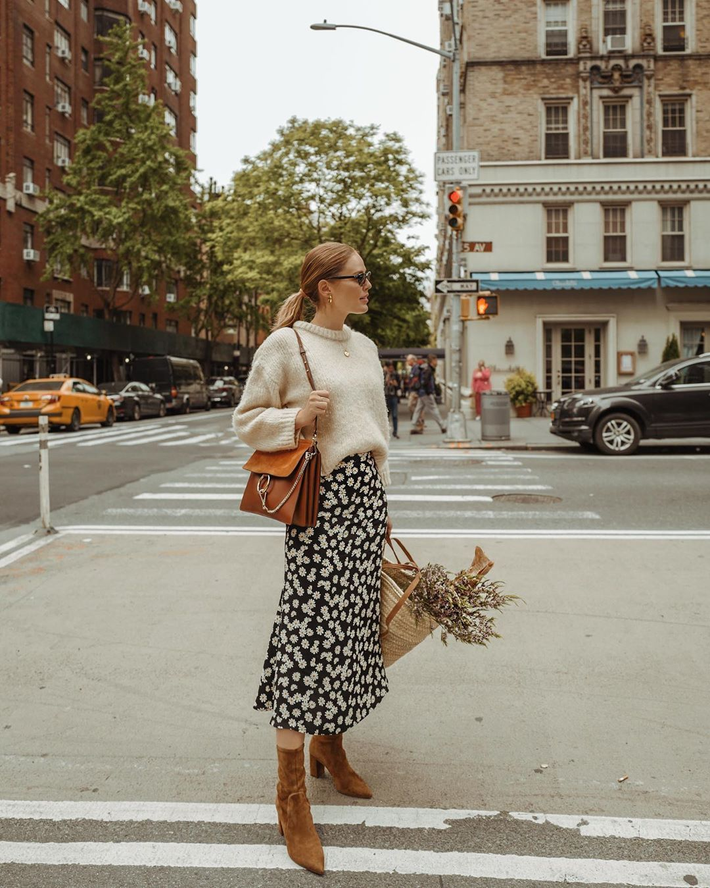 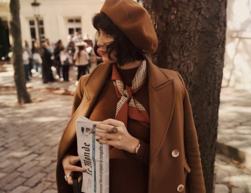 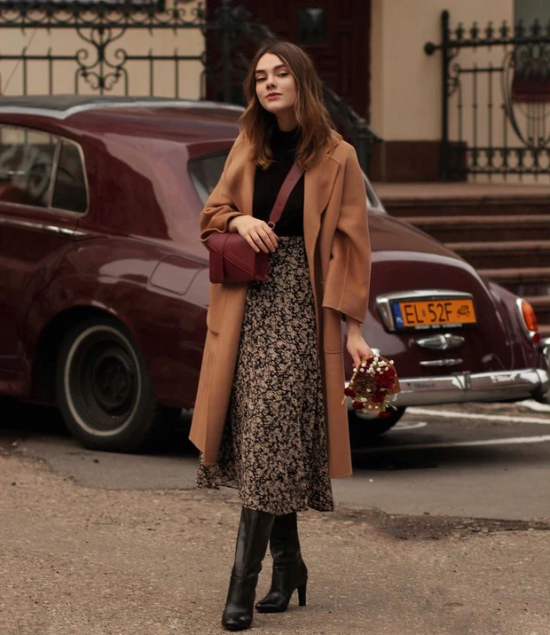
2.Áo/Đầm sơ mi, chữ V: Đơn giản và thanh lịch, phái đẹp có thể lựa chọn các mẫu đầm dài cổ chữ V trên nền họa tiết nổi bật ngày hè, hoặc các mẫu đầm sơ mi với hàng nút dài từ cổ áo làm điểm nhấn.
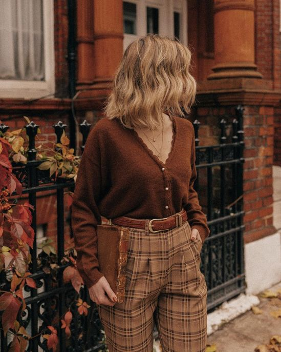 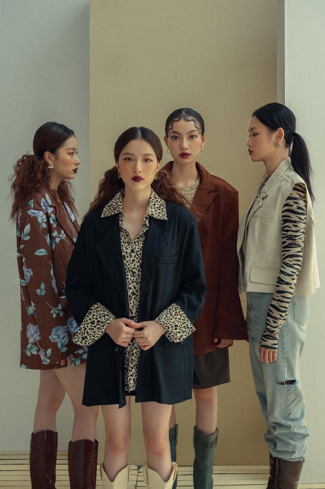 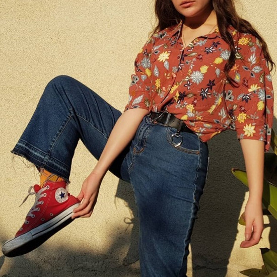
3.Họa tiết caro: Không những mang lại hơi thở cổ điển, chúng còn toát lên vẻ bụi bặm và cá tính. Đây là item "must-have" cho những ai theo đuổi phong cách này.
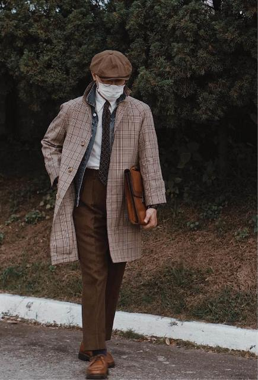
 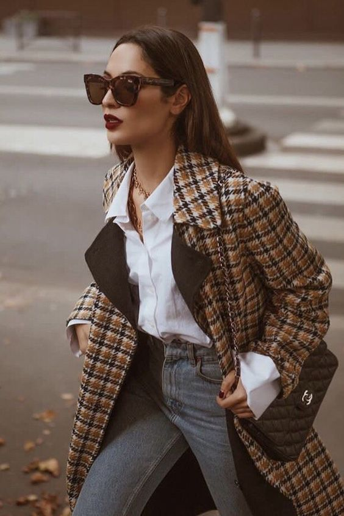
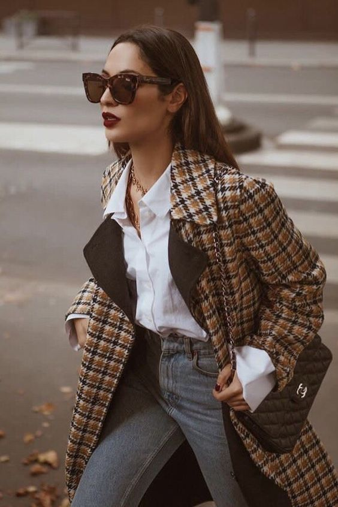
II.Preppy:
*Khái niệm: Đây là một trong những phong cách thời trang phù hợp với văn hóa học đường, hay những nơi cần sự kín đáo, lịch sự. Trang phục Preppy được thiết kế tao nhã, thanh lịch, kín đáo.
*Cách phối đồ với phong cách Preppy:
1.Bộ đồng phục phong cách Preppy: Đây là kiểu trang phục gợi liên tưởng đến phong cách học đường nhất. Bộ trang phục gồm chiếc áo blazer với thiết kế gọn gàng, tinh tế và váy ngắn trên gối. Bộ đồ preppy thường có họa tiết kẻ ô, gợi liên tưởng đến trang phục đi học nổi tiếng của cô nàng Cher trong bộ phim Clueless năm 1995.
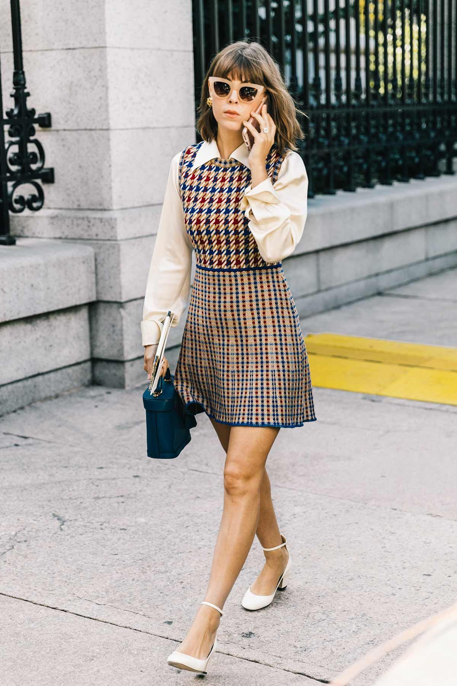 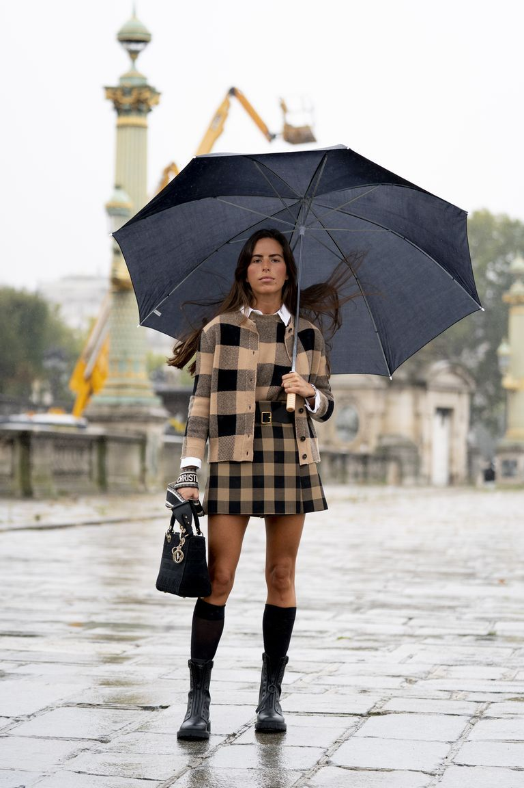
2.Chân váy: Chân váy được xem như biểu tượng của những cô nàng nữ sinh. Bạn có thể kết hợp chân váy cùng blazer hoặc mặc đóng thùng bên ngoài áo sơmi, áo sweater. Lưu ý rằng đừng nên chọn chân váy maxi hay váy midi mà ưu tiên váy ngắn bút chì hoặc xếp ly dáng xòe để có được bộ trang phục trẻ trung mang đậm phong cách preppy.
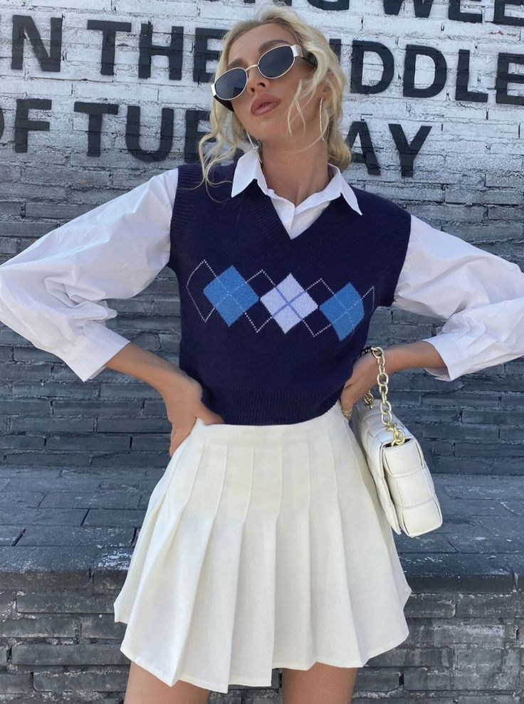 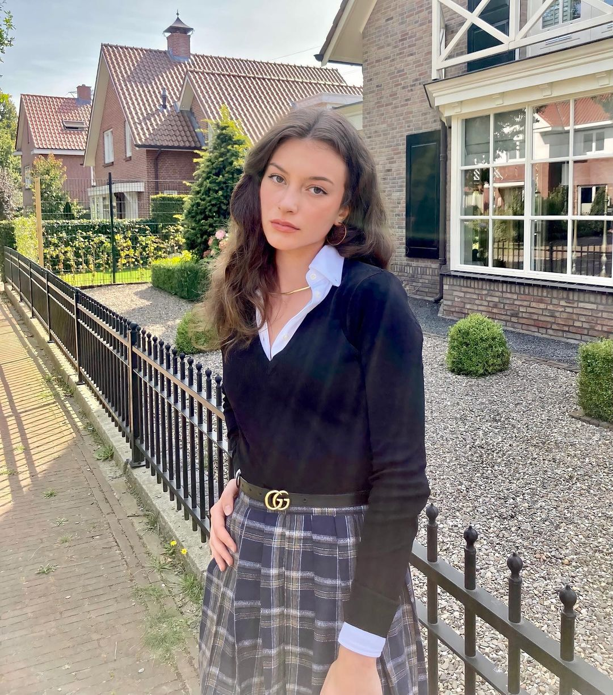 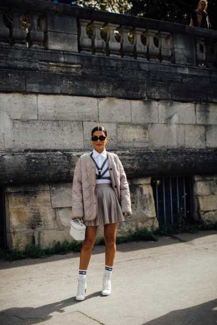
III.Sporty:
*Khái niệm: Sporty style là phong cách thời trang lấy cảm hứng từ tinh thần thể thao mang lại sự năng động, khỏe khoắn và thoải mái cho người mặc. Nhiều người nghĩ rằng đây là phong cách dành riêng cho dân chơi thể thao nhưng không nhất thiết phải chơi thể thao thì mới diện được style này. Chẳng có một tín đồ thời trang nào sẽ mãi khư khư diện mãi một phong cách nào đó, đến với sporty style bạn sẽ tha hồ mix&match những items của phong cách này với một phong cách thời trang khác. Phong cách thời trang sporty sẽ không bắt bạn phải “đóng khung” trong một bộ outfit từ trên xuống dưới toàn bộ đều là phong cách này.
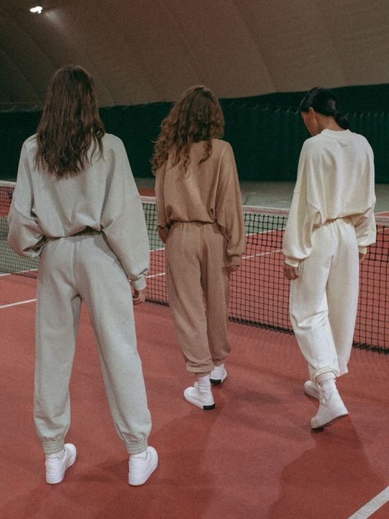 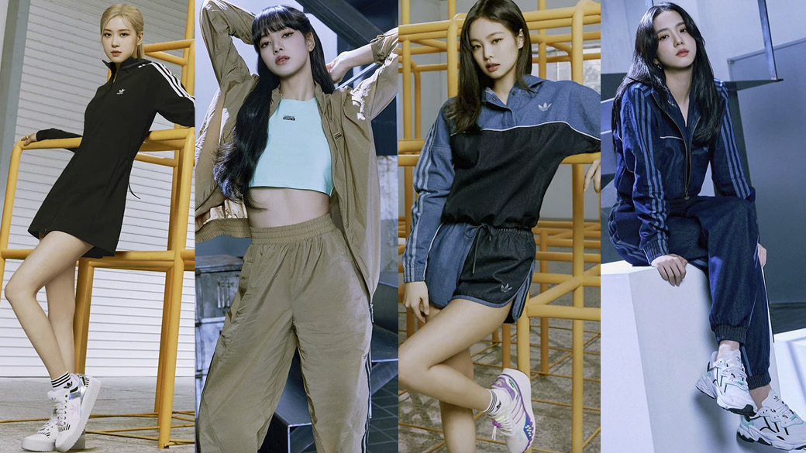 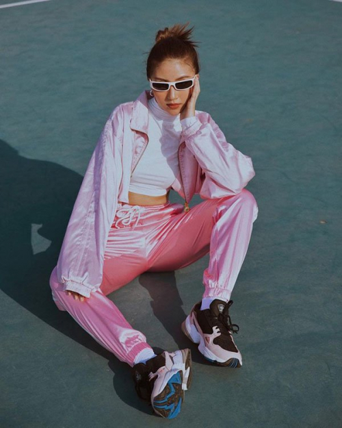 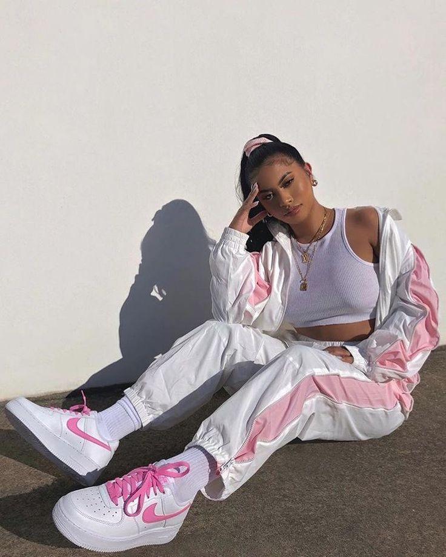 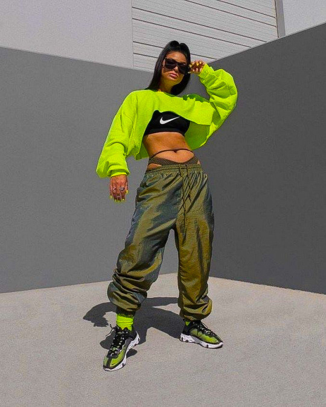
NAMELAZZ
IV.Y2K:
*Khái niệm: Làn sóng hình thành phong cách gọi là Y2K thực chất bắt đầu từ sớm hơn năm 2000. Phong cách Y2K là một tổ hợp của những gì rực rỡ nhất mà cũng nổi loạn nhất, chan chứa hy vọng nhất và cũng tang thương nhất.
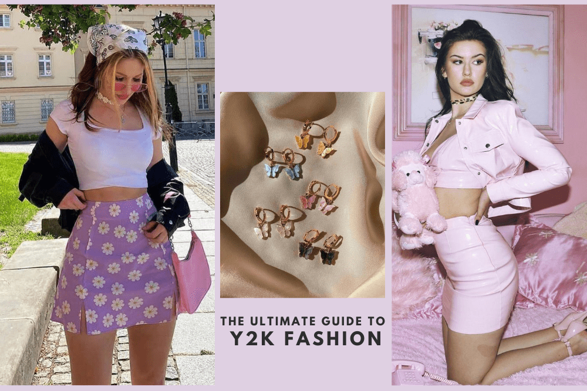
*Làm thế nào để diện Y2K đúng điệu?
Rất nhiều cảm hứng thời trang Y2K có thể đến từ một số biểu tượng văn hóa nhạc pop thời thơ ấu. Hay búp bê Bratz (khá giống với búp bê Barbie) cũng là nguồn cảm hứng thời trang điển hình cho Y2K, vì chúng được biết đến với màu chủ đạo là sắc hồng và tím lấp lánh.
*Một số phụ kiện đại diện xu hướng Y2K:
1.Túi xách cỡ nhỏ: Thiết kế đơn giản, chiếc túi “nhỏ nhưng có võ" này đang chiếm trọn tình cảm của nhiều tín đồ thời trang thế giới.


URBAN OUTFITTERS
V.Hippie:
*Khái niệm: Phong cách Hippie thể hiện sự phóng khoáng, du mục, bất quy tắc và sôi nổi trên những bộ thiết kế. Đặc trưng của phong cách này là những bộ quần áo hoặc đầm suôn nhiều tầng lớp và xếp nếp, không tuân theo bất cứ một quy tắc phối hợp nào và thường đi kèm phụ kiện cài đầu, băng đô,… tạo nên tổng thể tưởng như xuề xòa nhưng vô cùng hợp lý.

HIPPIE SHOP
VI. Street style:
*Khái niệm: Đúng như tên gọi, Street Style là từ mô tả phong cách thời trang đường phố. Không giống như những phong cách thời trang khác, Street Style được sinh ra từ đường phố chứ không phải tại các sàn diễn hay bộ sưu tập hoành tráng. Cũng bởi lý do này, thời trang Street Style là sự tổng hòa của rất nhiều nét cá tính và phong cách thời trang khác nhau. Thời trang Street Style không gò bó trong những quy chuẩn khắt khe, mà mang tính tự do thể hiện bản sắc riêng, cùng sự ảnh hưởng không nhỏ của hiệu ứng lan truyền (viral) và văn hóa Hip-hop.